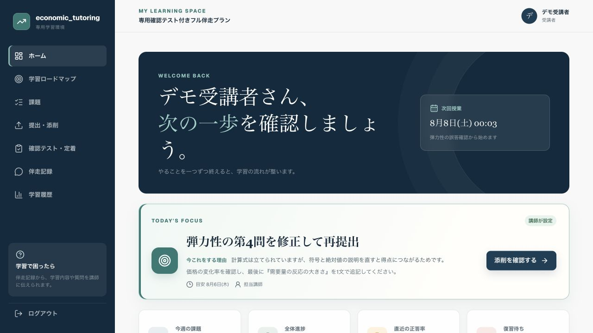
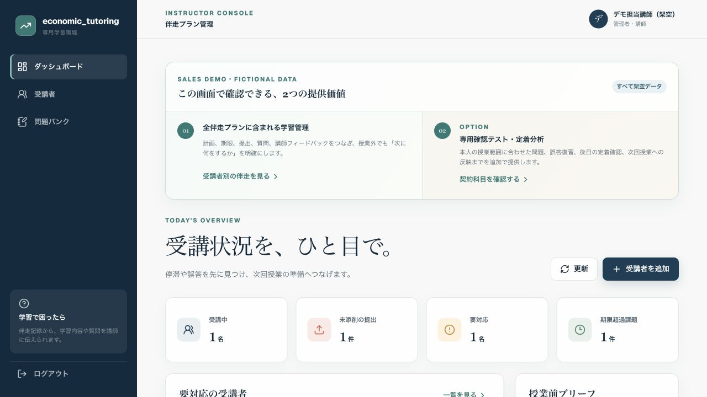
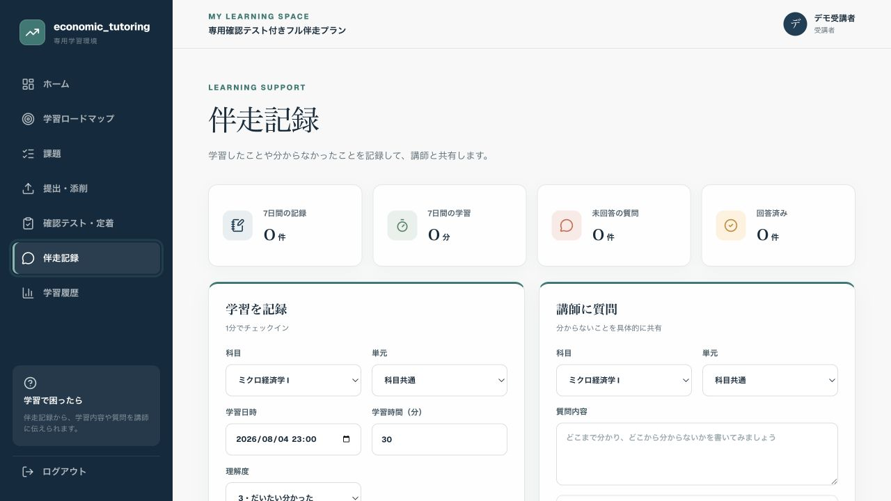
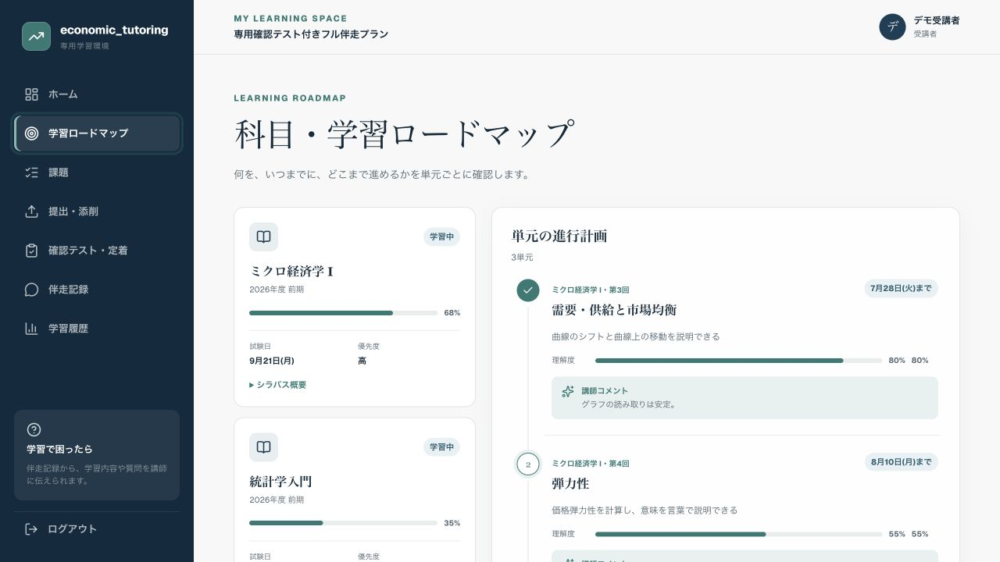
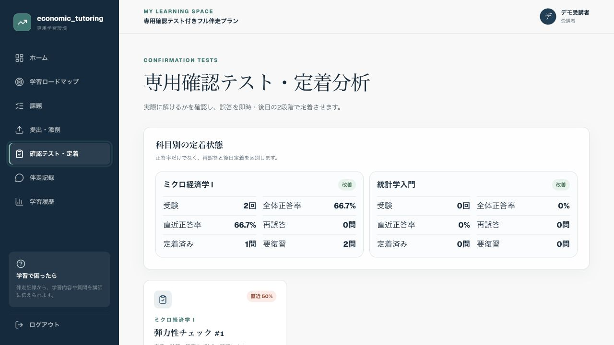

次に何をするか分からない
授業後の復習や課題が曖昧で、取りかかるまでに時間がかかる。
LEARNING SUPPORT BETWEEN LESSONS
月額伴走では、受講者専用の学習環境で、課題・期限・提出・質問を講師と共有します。状況を早めに把握し、次の行動を明確にして、次回授業へつなげます。
公開デモと掲載画面は、すべて架空データを使用しています。

BETWEEN LESSONS
問題は意欲だけではありません。次の行動や相談先が曖昧なままだと、つまずきが試験直前まで見えにくくなります。
授業後の復習や課題が曖昧で、取りかかるまでに時間がかかる。
メッセージや紙に情報が散らばり、学習の流れを振り返りにくい。
本人が困っていても表面化せず、試験前になって苦手が見つかる。
前回以降の行動が共有されず、授業時間を状況確認に使ってしまう。
HOW IT WORKS
学習環境を渡して終わりではありません。講師が内容を確認し、授業と授業外の学習を一つの流れで進めます。
課題の進行、提出、質問、つまずきを講師が確認。
今の状況に合わせ、次の課題と期限を具体化。
取り組み・提出・質問を一か所に記録。
履歴をもとに、説明や課題の優先順位を調整。
行動を細かく監視するためではなく、つまずきを早期に見つけ、次にやることを明確にするための仕組みです。
ACTUAL SCREENS
受講科目・教材・試験日程に合わせ、共通基盤を一人ひとりに設定します。保護者への共有は、大学生本人の同意範囲で行います。




ログイン情報や実在する受講者情報は公開していません。表示内容はデモ環境の状態により異なる場合があります。
COMPARISON
どちらが上ということではなく、必要な支援範囲が異なります。
REGULAR LESSON
WITH LEARNING SPACE
INCLUDED
計画・課題・提出・質問・次の行動を共有し、講師の対応と次回授業へつなげます。
PAID OPTION
説明後に自力で解けるかを専用問題で確かめ、誤答の解き直しと後日の定着確認を授業へ戻します。
FAQ
かかりません。月4回・月8回・フル伴走の各プランに含まれます。単発個別指導には含まれません。
いいえ。課題・提出・質問等の学習情報を共有し、つまずきの早期発見と次の行動の明確化に使います。
いいえ。共通基盤を、受講科目・教材・試験日程に合わせて設定します。
必須ではありません。専用問題による誤答・定着確認が必要な科目に限り、伴走への追加オプションまたはフル伴走で利用できます。
課題・期限・提出・質問・履歴の確認はスマートフォンに対応しています。長い数式や途中計算では、紙やPCの併用を案内する場合があります。
単位取得や成績は保証しません。授業理解、計画、進捗、定着の支援を行いますが、出席・課題提出・学習時間等も結果に影響します。